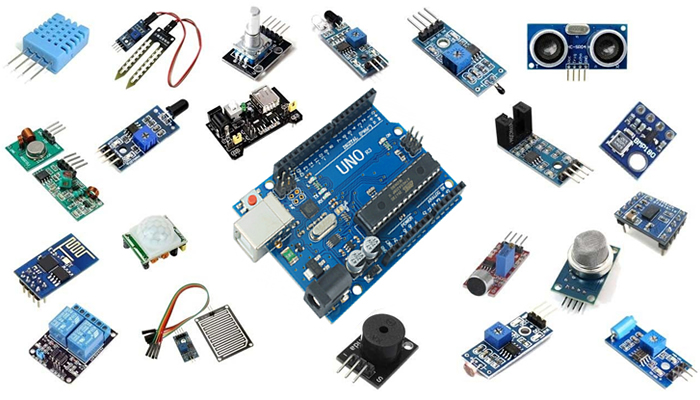

Robótica Industrial & Internet das Coisas
Catálogo técnico e educativo sobre robôs industriais, sensores de IoT e suas integrações com a Indústria 4.0
7 Robôs Industriais
Cartesiano, SCARA, Articulado, Cilíndrico, Delta, Polar e Colaborativo, com funcionamento, aplicações e modelos comerciais.
25 Sensores IoT
Sensores de temperatura, distância, gás, corrente, vibração e muito mais, usados com Arduino, ESP32 e Raspberry Pi.
Comunicação Industrial
Como robôs e sensores trocam dados usando MQTT, OPC UA, Profinet e Ethernet Industrial.
O que é a Internet das Coisas (IoT)?
A Internet das Coisas (do inglês, Internet of Things - IoT) é o paradigma tecnológico em que objetos físicos do dia a dia — máquinas, sensores, veículos, eletrodomésticos e até robôs — são conectados à internet e entre si, trocando dados automaticamente sem a necessidade de intervenção humana constante. Cada dispositivo IoT normalmente possui um sensor ou atuador, um módulo de comunicação (Wi-Fi, Bluetooth, LoRa, Ethernet, entre outros) e um sistema embarcado responsável por processar as informações coletadas.
Na indústria, esse conceito deu origem à chamada IIoT (Industrial Internet of Things), que aplica a mesma lógica a chão de fábrica: sensores medem temperatura, vibração, presença e consumo de energia, enviando esses dados para sistemas de supervisão (SCADA), controladores lógicos programáveis (CLPs) e plataformas em nuvem, permitindo monitoramento remoto, manutenção preditiva e controle em tempo real dos processos produtivos.

O que é a Robótica Industrial?
A Robótica Industrial é o ramo da automação dedicado ao projeto, construção e aplicação de robôs manipuladores em processos produtivos. Um robô industrial é uma máquina programável, capaz de se mover em múltiplos eixos, projetada para executar tarefas repetitivas, de precisão ou perigosas — como soldagem, pintura, montagem, paletização, inspeção de qualidade e movimentação de cargas — substituindo ou auxiliando o trabalho humano.
Cada robô industrial é classificado de acordo com sua geometria de movimento (cinemática), o que determina o formato do seu espaço de trabalho e o tipo de aplicação para o qual é mais indicado. As sete famílias mais utilizadas na Indústria 4.0 — Cartesiano, SCARA, Articulado, Cilíndrico, Delta, Polar e Colaborativo — estão detalhadas na página de catálogo de robôs.
A importância da Automação Industrial
A automação industrial consiste no uso de sistemas de controle — como CLPs, robôs, sensores e softwares supervisórios — para operar equipamentos e processos com mínima intervenção humana. Seus principais benefícios incluem o aumento da produtividade, a padronização da qualidade, a redução de desperdícios e a maior segurança para os trabalhadores, já que tarefas perigosas ou repetitivas passam a ser executadas por máquinas.
Esse é o pilar central da chamada Indústria 4.0, um modelo produtivo que combina automação tradicional com tecnologias digitais — IoT, inteligência artificial, big data e computação em nuvem — criando fábricas inteligentes (smart factories) capazes de se adaptar e otimizar a produção em tempo real.
A relação entre Robótica e Internet das Coisas
Um robô industrial tradicional apenas executa comandos pré-programados, sem trocar informações com o ambiente externo. Quando integrado a sensores IoT e a redes de comunicação industrial, esse robô passa a ser consciente do seu entorno: sensores de proximidade evitam colisões, sensores de força e vibração detectam falhas mecânicas antes que ocorram, e câmeras associadas a sensores de visão identificam peças defeituosas.
Além disso, os dados gerados pelo robô (posição, corrente do motor, temperatura, ciclos executados) podem ser enviados via protocolos como MQTT, OPC UA ou Profinet para sistemas de supervisão e plataformas em nuvem, permitindo:
- Monitoramento remoto do robô em tempo real;
- Manutenção preditiva, evitando paradas não programadas;
- Otimização da produção com base em dados históricos;
- Integração com outros equipamentos da linha de produção (visão computacional, esteiras, CLPs).
Essa fusão entre Robótica + IoT é o que torna possível a "fábrica inteligente" da Indústria 4.0, onde máquinas colaboram entre si e tomam decisões com base em dados sensoriais em tempo real.
O que é o Sensoriamento?
Sensoriamento é o processo de captar grandezas físicas do ambiente — como temperatura, luminosidade, distância, presença, gás, vibração, corrente elétrica — e convertê-las em sinais elétricos que podem ser lidos, interpretados e processados por um microcontrolador (Arduino, ESP32), um computador de placa única (Raspberry Pi) ou um CLP industrial.
Os sensores são a "porta de entrada" de qualquer sistema IoT ou automatizado: sem eles, não é possível saber o que está acontecendo no mundo físico. Já os atuadores (motores, relés, válvulas) são o caminho inverso — transformam decisões digitais em ações físicas.
A relação entre sensores, comunicação de dados e controle de processos
Em um sistema de automação, o ciclo básico funciona assim: sensor → controlador → atuador. O sensor capta o dado (ex.: temperatura de um forno), o controlador (Arduino, CLP) processa essa informação e decide uma ação, e o atuador executa essa ação (ex.: liga o resfriamento). Quando esse ciclo é conectado à internet, os dados também podem ser enviados a um painel de controle remoto, um banco de dados na nuvem ou um aplicativo, caracterizando um sistema de controle de processos com IoT.
Os 25 sensores mais utilizados em projetos com Arduino, ESP32 e Raspberry Pi — organizados por categoria, tipo de sinal e aplicação — estão detalhados na página de catálogo de sensores.
Arduino: conceito, funcionamento e programação
O Arduino é uma plataforma open source de prototipagem eletrônica, composta por uma placa com microcontrolador e um ambiente de desenvolvimento (IDE) próprio, baseado em uma linguagem derivada de C/C++. Ele é amplamente utilizado em projetos de automação residencial, robótica educacional e prototipagem de sistemas IoT industriais, por ser acessível, de baixo custo e compatível com centenas de sensores e módulos de comunicação.

Veja o funcionamento detalhado, as características técnicas e 10 exemplos de programação com sensores reais na página dedicada ao Arduino.
Onde estamos localizados